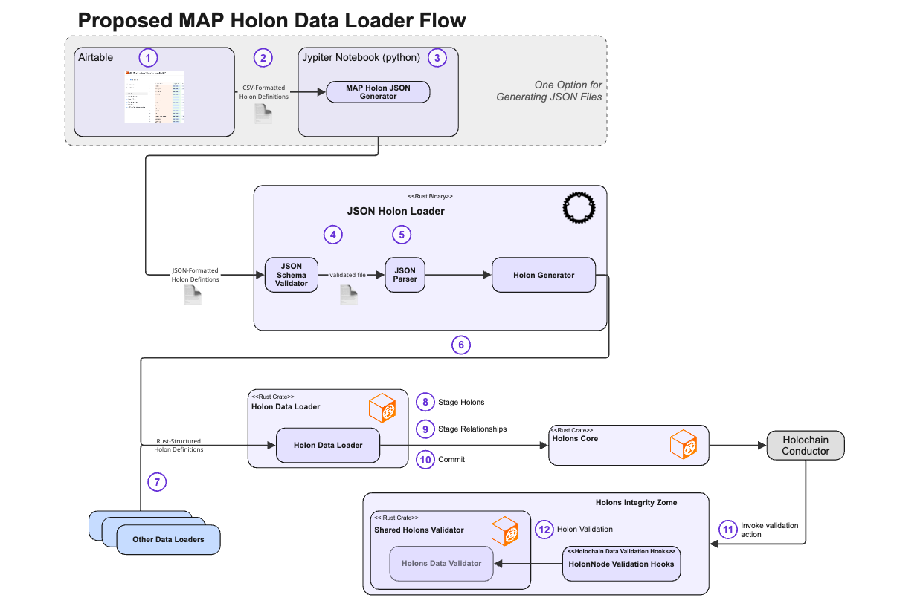

MAP Holon Data Loader Design Specification (Updated)¶
The Holon Data Loader will convert holon data presented in JSON files into Holons and HolonRelationships that are staged and committed to a (single) MAP Space using existing MAP APIs. Because all MAP types (e.g., PropertyType, HolonType, RelationshipType) are themselves holons, the Holon Data Loader can be used to load TypeDescriptors just like any other data — eliminating the need for a separate type-specific loader. Input files are syntactically validated against a JSON Schema to ensure they represent well-formed holons, properties, relationships and, eventually, dances.
Validation of imported holons and their properties and relationships against their Type Descriptors is triggered by standard Holochain validation callbacks. These callback functions, implemented in the holons_integrity_zome invoke shared validation functions to actually perform the validations. All Holochain dependencies are isolated in the integrity zome so that the shared validation functions have no holochain dependencies.
If the target space does not already contain all required TypeDescriptors (e.g., BookType, title, HAS_AUTHOR), they must be included as part of the import and loaded first. Since we do not yet have deployed instances of the MAP that persist data, all types and data required for an integration Test Case must be loaded as part of the test case itself. This includes importing the MAP Schema. Thus, the test case initialization includes the following steps:
- Import MAP Meta-Schema
- Import MAP Core Schema
- Import Domain-Specific Type Descriptors (if any)
- Import Domain-Specific Data (if any)
All four test steps use the same Holon Data Loader. Each step imports the type descriptors needed to validate the data imported in the subsequent step.
üß© Process Overview¶
The following diagram shows the Holon Data Loading process.

üß≠ Step-by-Step: MAP Holon Data Loader Flow¶
-
Define Holons in Airtable -- For now, we are using Airtable as our source of truth for data imports. A user or domain expert defines holons, properties, and relationships as rows in a spreadsheet-like interface. NOTE: This is just one option — other JSON generation methods are possible.
-
Export CSV from Airtable -- Airtable exports the holon definitions into a CSV file, which contains structured tabular data for each holon, including properties, types, and relationships.
-
Convert CSV to JSON -- A Jupyter Notebook (written in Python) loads the CSV file and uses the MAP Holon JSON Generator to transform the rows into JSON-formatted Holon Definitions. These definitions conform to the MAP Holon Data Loader's expected schema.
-
Run the JSON Schema Validator -- Before loading, the generated JSON input file is validated using a JSON Schema Validator. This ensures that the file:
- Is structurally valid
- Uses valid type names and relationship formats
The validated file represents well-formed Holons, Properties, and Relationships.
-
Parse and Prepare Holons -- The validated JSON is parsed into in-memory data structures. The Holon Generator builds internal
HolonImportSpecstructs from the parsed data. -
Invoke the Holon Data Loader -- The Holon Generator passes the structured holon definitions to the Holon Data Loader, a Rust crate. This loader:
- Handles all staging and relationship resolution
-
Works for both instance data and TypeDescriptors
-
(Optional) Other Data Loaders -- Other data loaders may bypass JSON entirely and produce Rust-structured holon definitions directly. These are also accepted by the Holon Data Loader pipeline.
-
Stage Holons -- The loader performs Pass 1, where each holon is:
- Assigned a local ID or temp key
- Validated for syntactic structure
-
Staged with its properties only (relationships deferred)
-
Stage Relationships -- The loader performs Pass 2, resolving all deferred relationships:
- References to staged holons use
temp_key - References to saved holons use keys or HolonIds
-
External references resolve via space proxies
-
Commit Holons -- All staged holons are committed into the MAP space via the
holons_corecrate. This action triggers holochain’s commit lifecycle. -
Trigger Validation -- As part of the commit, the Holochain Conductor invokes validation actions. These hit the HolonNode Validation Hooks in the
holons_integrity_zome. The implementation of these hook functions converts the data into "holochain-independent" data structures in order to invoke the shared validation functions. -
Run Shared Validation Logic The hooks delegate to the Shared Holons Validator, which contains:
- Validation against TypeDescriptors
- Enforcement of required properties and cardinalities
- No direct Holochain dependencies — enabling reuse of these validations from holons_core without pulling in holochain and its dependencies.
ü߆ Design Philosophy¶
| Principle | Description |
|---|---|
| Holonic Uniformity | Everything — including types — is a holon |
| Self-Describing Types | The type and key fields provide identity and classification |
| Declarative Imports | Inverse relationships and embedded holons may be expressed naturally |
| Keyed Reference Integrity | Only keyed holons may be targeted by $ref |
| Two-Pass Import | Enables circular references and loose ordering in authoring |
| Minimal, Consistent Format | Supports both human authoring and automated generation |
üìå Keyed vs Keyless Holons¶
MAP distinguishes two structural categories of holons:
| Feature | Keyed Holons | Keyless Holons |
|---|---|---|
Includes key |
✅ Yes | ❌ No |
| Unique within space | ✅ Yes | ❌ Not applicable |
Can be referenced via $ref |
✅ Yes | ❌ No |
| Must be embedded in JSON | ❌ Optional | ✅ Required |
| Can be target of declared relationship | ✅ Yes | ❌ No |
| Must declare outgoing relationship to keyed holon | ❌ Optional | ✅ Required |
- Keyed holons include a stable
key(materialized from properties) and may be referenced by other holons via$ref. - Keyless holons are contextual and must be embedded as part of another holon’s relationship. They must not be referenced or stand alone.
This pattern ensures clean graph semantics, staging integrity, and simplicity for authors.
üîÅ Declared vs Inverse Relationships in JSON¶
MAP represents both Declared and Inverse relationships using SmartLinks, but only Declared Relationships are:
- Explicitly defined in schemas
- Directly authored and persisted
- Validated against cardinality, semantics, and direction
Inverse Relationships are: - Inferred by the system - Automatically maintained as mirrors of their declared counterparts - Not directly writable in the storage layer
✨ Ergonomic Authoring Support¶
To improve JSON authoring, the Holon Data Loader supports:
✅ Expressing inverse relationships in JSON — which are then automatically rewritten into their declared equivalents before staging
For example, a JSON snippet like:
{
"type": "#Schema",
"key": "LibrarySchema",
"relationships": [
{ "name": "Components", "target": [{ "$ref": "BookType" }] }
]
}
will be rewritten internally to:
{
"type": "#BookType",
"relationships": [
{ "name": "ComponentOf", "target": { "$ref": "LibrarySchema" } }
]
}
This preserves the storage model while making authoring more intuitive.
üõë Note: If both directions of a relationship pair are expressed in the same import file, the loader will raise a warning or error.
üìÇ JSON Import File Structure¶
Details about JSON formatting, required fields, reference expressions ($ref), embedded holons, and schema validation rules have been moved to the Holon Data Loader Guide.
See: Holon Data Loader Guide – Authoring Valid JSON Files
üîç Validation Lifecycle¶
The Holon Data Loader and MAP system use multiple layers of validation to ensure correctness, schema alignment, and safe persistence.
1. Schema Validation (Pre-Load)¶
Before holons are even staged, input files are validated using JSON Schema:
- The loader always begins by validating imports against the
bootstrap-import.schema.jsonschema. This schema ensures:- Holons are properly structured
- Properties are well-formed
- Relationship targets follow required structure
- No invalid reference forms are present (e.g., unkeyed
$reftargets)
üߨ Cascading Schema Validation¶
After loading the MAP Meta-Schema, additional JSON Schemas can be generated automatically for downstream validation:
- Meta-Schema → Used to validate Core Type imports (e.g., PropertyType, ValueType)
- Core Schema → Used to validate Domain-Specific Schema files
- Domain Schema → Used to validate Domain-Specific Data files
This allows every import layer to be validated against a holon-based, introspected schema, enforcing MAP type rules long before runtime.
2. Runtime Validation (Post-Commit)¶
After holons are committed, Holochain's Conductor orchestrates the integrity checks by invoking validation callbacks defined in the map_holons_integrity zome.
❗ Holons do not themselves trigger validation — the request to persist a holon causes the Conductor to invoke validation logic.
The validation callbacks:
- Receive Holochain-native types like Record, Link, ActionHash
- Convert these into MAP-native, Holochain-independent structures:
- Holon
- HolonRelationships
- LocalId, etc.
These converted forms are passed to shared validation functions (in holons_core) that enforce:
- Required and optional property rules
- Cardinality constraints on relationships
- Reference resolution and type compatibility
- Key and relationship uniqueness
- Schema-defined constraints (e.g., min/max values, enum values, etc.)
This design allows the same validation logic to be reused across client tools, data loaders, and runtime validation — avoiding duplication and enabling introspection.
3. Loader-Level Validations¶
The Holon Data Loader performs additional checks during staging:
- Ensures no inverse relationship appears more than once (after rewriting)
- Validates that all
$reftargets resolve to keyed holons or embedded holons - Rejects direct references to keyless holons
- Ensures that all keyless holons are:
- Embedded as relationship targets
- The source of at least one declared relationship
- Ensures that keys (when present) are unique within the load scope
üíæ Staging and Commit Process¶
Pass 1: Stage Holons¶
- Create in-memory Holon stubs for each input
- Only properties are staged; relationships are deferred
- Holons must include
type(andkey, if keyed) - Relationships are stored for Pass 2
Pass 2: Stage Relationships¶
- Resolve all
relationshipsfrom JSON - References are resolved by
$ref,Type:Key, or embedded inline - Inverse relationships are rewritten to their declared form
- Embedded keyless holons are inlined into source holon relationships
Commit and Validate¶
- After all holons are staged, the loader invokes
holons_coreto commit - Holochain callbacks are triggered
- Shared validation logic enforces type rules
üîÆ Future Enhancements¶
- Add schema-based authoring for enum types, constraint types, and complex nested holons
- Expand support for symbolic references (
DanceRequest) - Enhance loader validation to support contextual awareness of target schemas
- Support streaming JSON parsing for very large imports
üìé Summary¶
The Holon Data Loader is the universal import engine for MAP Types and Instances. It supports:
- Bootstrap loading of MAP Meta-Schema and Core Schema
- Domain-specific extension imports
- Declarative instance creation with ergonomic syntax
- Unified graph population using a two-pass process
- Rewriting of inverse relationships for intuitive JSON authoring
- Holochain-independent shared validation
Authors and tool builders can rely on a consistent, minimal JSON format while benefiting from full MAP introspection, validation, and schema enforcement.
See also: Holon Data Loader Guide for JSON authoring rules and examples.
========== OBSOLETE CONTENT ==============¶
Everything after this point is left-over from prior versions are targeted to be deleted.
üîé JSON File Structure¶
A JSON import file contains two top-level keys:
{
"meta": { ... },
"holons": [ { ... }, { ... }, ... ]
}
metacontains metadata about the import (version, author, etc.).holonscontains the list of holons to be imported.
Holon Structure¶
Each holon in the holons list is represented as a JSON object with the following keys:
type(string): Fully qualified$refto the holon's type (e.g.,"#MapStringValueType"). Replaces the olderDescribedBypattern.key(optional): A unique identifier if the holon is keyed.temp_key(optional): A temporary key for referencing other holons within the same import file.properties: A map of property name to typed value.relationships: A list of relationship objects, each containing:name: Relationship nametarget: Either a$refstring or an embedded holon
üîé Key Design Rules¶
✅ type Implies DescribedBy¶
- Every holon must specify a
typeusing#Keysyntax. - This replaces the need for an explicit
DescribedByrelationship.
✅ Use Components Instead of IsComponentOf¶
- All imported holons are children of a
MapSchemaTypeholon. - The
Componentsrelationship replacesIsComponentOf.
✅ Declare UsesKeyRule for Keyed Holons¶
Each keyed holon must include a relationship:
{
"name": "UsesKeyRule",
"target": {
"type": "#FormatKeyRule",
"properties": {
"format": "$0",
"property_names": ["type_name"]
}
}
}
✅ Fully Qualified Keys for Relationship Types¶
Use a key such as:
(HolonType)-[DescribedBy]->(TypeDescriptor)
✅ $ref Is the Only Reference Format¶
Reference targets in relationships must use $ref strings, such as:
- #temp-key
- Type:Key
- id:<HolonId>
- @Proxy:Type:Key
- ext:<ProxyId>:<LocalId>
üìä Data Loader Flow¶
- Author Holons – Use Airtable or any editor
- Convert to JSON – Jupyter notebook or custom tool
- Validate – Run against JSON Schema
- Parse – Create internal
HolonImportSpecstructs - Pass 1: Stage Holons
- Assign temp_keys and validate shape
- Properties only; defer relationships
- Pass 2: Stage Relationships
- Resolve references using
$ref
- Resolve references using
- Commit – Insert holons via
holons_core - Validate – Trigger integrity zome and shared validators
üîÅ Example Holon with Relationships¶
{
"type": "#BookType",
"temp_key": "book-001",
"properties": {
"title": { "type": "#MapStringValueType", "value": "Future Primal" }
},
"relationships": [
{ "name": "AUTHORED_BY", "target": { "$ref": "PersonType:charles-eisenstein" } },
{ "name": "MENTORED_BY", "target": { "$ref": "#mentor-temp-001" } }
]
}
üéì Meta-Modeling: Relationship Types¶
‚úâÔ∏è Primary vs. Inverse Relationship Types¶
Use two types:
- MetaPrimaryRelationshipType: explicitly declared by source
- MetaInverseRelationshipType: inferred only
üîÅ Inverse Links¶
Each relationship holon must link to its inverse using:
{
"name": "InverseOf",
"target": { "$ref": "#OtherRelationshipType" }
}
Only primary relationships are listed in PRIMARY_SOURCE_FOR of the source HolonType.
üìÑ Key Rules for Relationship Types¶
{
"format": "($0)-[$1]->($2)",
"property_names": ["source_type", "type_name", "target_type"]
}
This ensures uniqueness and proper $ref resolution.
ü§ù Validation Overview¶
- Holon validation happens via Holochain callbacks
- Type validation uses shared holochain-independent logic
$refentries must resolve in Pass 2 or trigger errors
üåê Design Philosophy¶
| Principle | Description |
|---|---|
| Holonic Uniformity | Everything (types, rules, instances) is a holon |
| Self-Describing | type and key provide all descriptor info |
| Keyed Reference Integrity | No reference unless key or temp_key defined |
| Two-Pass Import | Enables circular refs and easy authoring |
| Minimal Format | Concise JSON with embedded metadata |
üîÆ Next Steps¶
- Add section on symbolic references via
DanceRequest - Add schema examples for EnumType, PropertyType, etc.
- Publish complete reference
bootstrap-import.schema.json
⸻